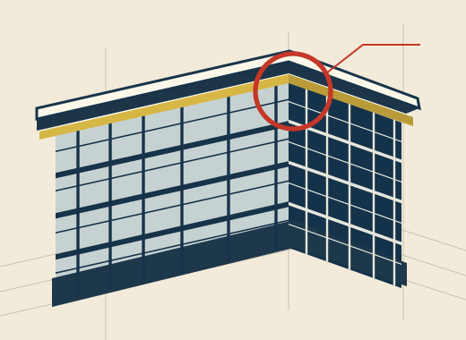

Bauhaus Design
The corner
joint.
A concrete slab turns a corner. The glazing steps back. Follow the red ring to see how the two edges meet.
Inspect the junction

Bauhaus Design
A concrete slab turns a corner. The glazing steps back. Follow the red ring to see how the two edges meet.
Inspect the junction